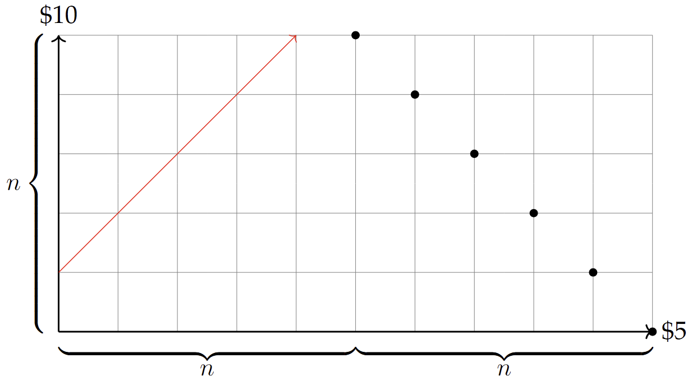
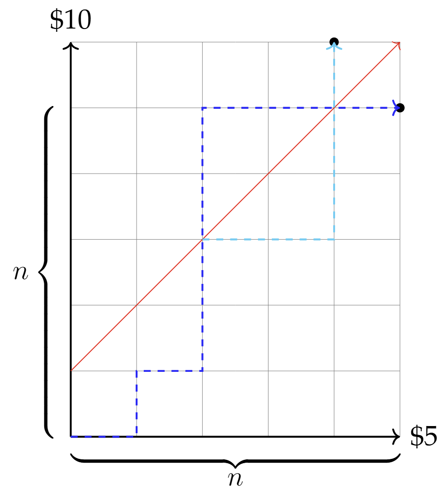

My friend gave me the following puzzle:
At a theater ticket office, $2n$ people are waiting to buy tickets. People have only \$5 bills or \$10 bills. The ticket seller has no change to start with. If each person buys one \$5 ticket, what is the probability that all people will be able to buy their tickets without having to change positions?
This problem is given in the quantitative finance "green book" as "Ticket Line" but $n$ people have \$5 bills and the other $n$ people have \$10 bills. My friend did not recall this fact, which actually makes our modified problem slightly harder.
One observation to make is that at any point in line from the front, the number of people with \$10 bills cannot exceed the number of people with \$5 bills; otherwise, the ticket seller would not be able to provide change.
We can use a graph to represent this. Let each \$5 bill represent a step right and each \$10 bill represent a step up. We can make steps as long as we do not go above the line $y = x$. This is equivalent to saying we cannot hit the line $y = x + 1$. We also want to find the number of paths using only right and up steps from $(0,0)$ to $(n,n)$, $(0,0)$ to $(n+1,n-1)$, $~\ldots~$, $(0,0)$ to $(2n,0)$, as we can have anywhere from $0$ to $n$ people with \$10 bills.
In the above diagram, the red line $y = x + 1$ represents the boundary we cannot touch. The block dots are the end points we want to reach from $(0,0)$, and we want to count the total number of paths from $(0,0)$ to each of these points without crossing the red line.
Consider the first black dot at $(n,n)$. Let a good path be one that does not cross the red line, and a bad path be one that does. Then the number of good paths to $(n,n)$ is equal to the total number of paths to $(n,n)$ minus the number of bad paths to $(n,n)$.
The total number of paths to $(n,n)$ is simply the number of ways to arrange $n$ right steps and $n$ up steps, so we have
To count the number of bad paths to $(n,n)$, we can use the reflection principle. For each bad path to $(n,n)$, reflect the remaining part of the path across the line $y = x + 1$ at the first point it crosses this line. Since each bad path must hit the red line at least once, and the reflection maps it to a path that goes to $(n-1,n+1)$, this gives us a one-to-one correspondence between bad paths to $(n,n)$ and all paths to $(n-1,n+1)$. This is illustrated in the diagram below, where the bad path is shown in dark blue and the reflected portion after hitting the red line is shown in light blue.
Therefore, the number of bad paths to $(n,n)$ is equal to the total number of paths to $(n-1,n+1)$. Using the same reasoning as before, we have
Thus, the number of good paths to $(n,n)$ is
This value is actually the $n$th Catalan number, which is the solution for the original problem. We can apply the same logic to find the number of good paths to each of the other block dots.
For all $k = 0, 1, ~\ldots~, n$, summing these values gives us the total number of good paths from $(0,0)$ to all block dots:
Therefore, the probability that all $2n$ people can buy their tickets without having to change positions is the following: